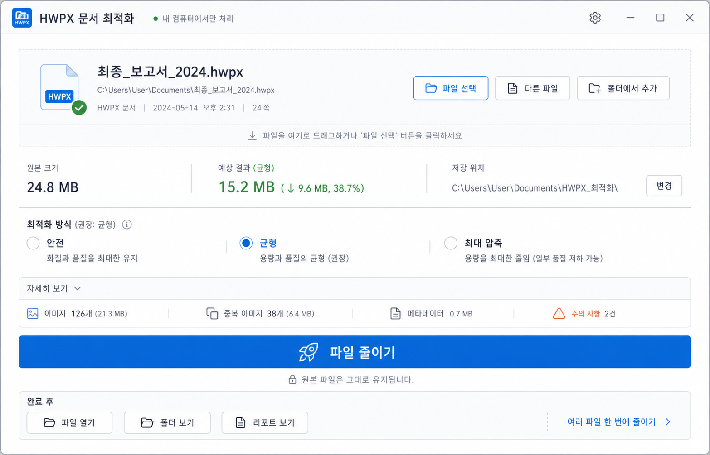

보고서 완성 후 “파일 하나 줄이기”가 목적이라는 전제에 맞춰, 대시보드 느낌을 줄이고 실행 버튼 중심으로 단순화했습니다.

첫 화면은 “최종보고서.hwpx → 약 41% 감소 → 파일 줄이기”만 강하게 보여줍니다. 분석/중복/메타데이터/리포트는 접힌 세부 정보로 낮춥니다.
모드는 큰 카드가 아니라 작은 선택기로 둡니다. 기본 추천은 균형이고, 사용자가 빠르게 실행할 수 있게 합니다.